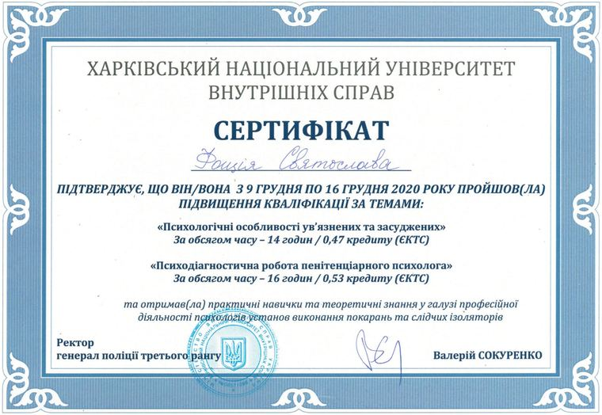
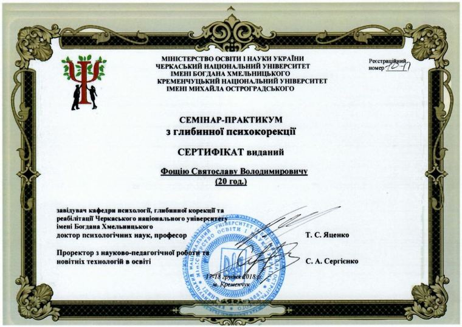
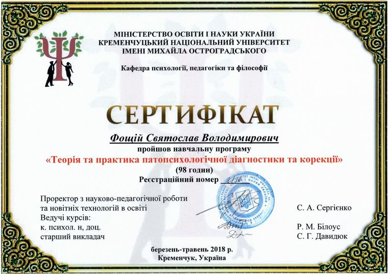
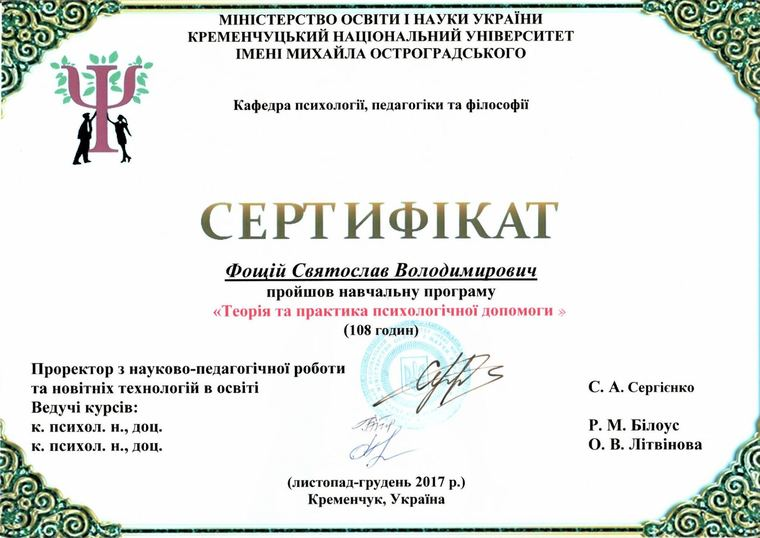

202030 hours
Penitentiary psychology
Kharkiv National University of Internal Affairs · professional development
Two modules, one ECTS credit in all: the psychology of people held in custody or serving a sentence, and the assessment work of a prison psychologist. It complements my year of practice in a juvenile detention centre.

View full size
201820 hours
Depth psychocorrection
Cherkasy Bohdan Khmelnytsky National University, with Kremenchuk Mykhailo Ostrohradskyi National University · practical workshop
Two days of practice from Professor T. S. Yatsenko’s Department of Psychology, Depth Correction and Rehabilitation at Cherkasy. Depth psychocorrection is a psychodynamic approach: rather than only easing a symptom, it looks for the unconscious patterns that keep a problem going.

View full size
201898 hours
Pathopsychological diagnostics and correction
Kremenchuk Mykhailo Ostrohradskyi National University · training programme
How attention, memory, thinking and emotions change in mental disorders, how to assess those changes, and psychological ways of correcting them. In counselling it helps me notice when someone needs a psychiatrist or a doctor, instead of or as well as a counsellor.

View full size
2017108 hours
Psychological help: theory and practice
Kremenchuk Mykhailo Ostrohradskyi National University · training programme
The longest of the programmes: what psychological help is, the forms it takes, and how to give it, in theory and in practice.

View full size